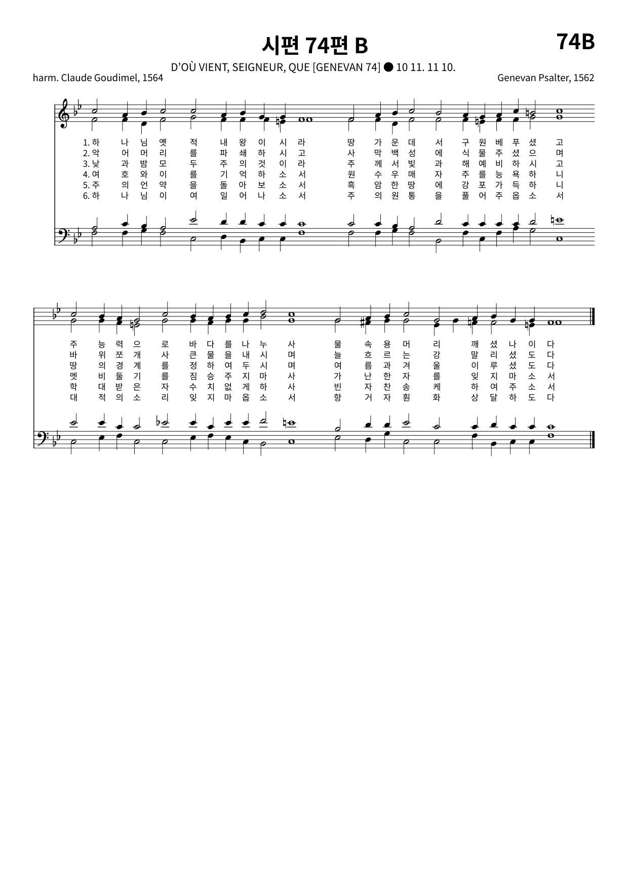

Psalm 74B
D’OÙ VIENT, SEIGNEUR, QUE [GENEVAN 74] · 10 11. 11 10.
English title: O God, Why Dost Thou Cast Us Off
Tune: Genevan Psalter, 1562 · Harmony: Claude Goudimel, 1564 · Lyrics: Korean adaptation of Psalm 74 from the Korean Revised Version (AI draft adaptation · not yet theologically reviewed) · 6 stanzas
Psalm 74 is divided into 2 tunes: A B · This tune contains stanzas 8–13 of the Psalm 74 lyrics.
Score PDF MusicXML (for printing) MusicXML (for accompaniment, with prelude and repeats) Read Psalm 74 (Korean Revised Version)
Score
← Psalm 74A ListAccompaniment (in preparation)Psalm 75 →
Lyrics (Korean)
Stanza 1
하나님 옛적 내 왕이시라
땅 가운데서 구원 베푸셨고
주 능력으로 바다를 나누사
물속 용 머리 깨셨나이다
하나님 옛적 내 왕이시라
땅 가운데서 구원 베푸셨고
주 능력으로 바다를 나누사
물속 용 머리 깨셨나이다
Stanza 2
악어 머리를 파쇄하시고
사막 백성에 식물 주셨으며
바위 쪼개사 큰 물을 내시며
늘 흐르는 강 말리셨도다
악어 머리를 파쇄하시고
사막 백성에 식물 주셨으며
바위 쪼개사 큰 물을 내시며
늘 흐르는 강 말리셨도다
Stanza 3
낮과 밤 모두 주의 것이라
주께서 빛과 해 예비하시고
땅의 경계를 정하여 두시며
여름과 겨울 이루셨도다
낮과 밤 모두 주의 것이라
주께서 빛과 해 예비하시고
땅의 경계를 정하여 두시며
여름과 겨울 이루셨도다
Stanza 4
여호와 이를 기억하소서
원수 우매자 주를 능욕하니
멧비둘기를 짐승 주지 마사
가난한 자를 잊지 마소서
여호와 이를 기억하소서
원수 우매자 주를 능욕하니
멧비둘기를 짐승 주지 마사
가난한 자를 잊지 마소서
Stanza 5
주의 언약을 돌아보소서
흑암한 땅에 강포 가득하니
학대 받은 자 수치 없게 하사
빈자 찬송케 하여 주소서
주의 언약을 돌아보소서
흑암한 땅에 강포 가득하니
학대 받은 자 수치 없게 하사
빈자 찬송케 하여 주소서
Stanza 6
하나님이여 일어나소서
주의 원통을 풀어 주옵소서
대적의 소리 잊지 마옵소서
항거자 훤화 상달하도다
하나님이여 일어나소서
주의 원통을 풀어 주옵소서
대적의 소리 잊지 마옵소서
항거자 훤화 상달하도다